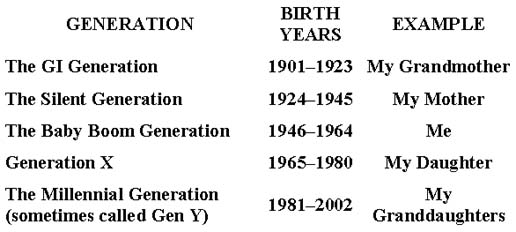

DEALING WITH MOTHER DURING RECOVERY
Their mothers may be long dead or white-haired, and infirm, but still they have a profound hold on their daughters, who talk of them as though they were about to be sent to their rooms. How is this reign of terror by little old ladies possible?
—Victoria Secunda, When You and Your Mother Can’t Be Friends1
You have earned the right to be proud of yourself for a number of reasons, not least of which is all the self-healing work that you have accomplished. Now let’s figure out what to do about your mother if she is still around, still a part of your life in some way. You’ve changed, and she hasn’t. At this stage in your recovery, you must explore ways for you to manage your relationship with her and remain healthy yourself.
Even though you are feeling stronger and have a more solid sense of self, you probably approach decisions about how to cope with Mother with trepidation. You might be asking yourself the following: “What can I say to her?” “Can she be fixed?” “How do I deal with her?” “Should I stay connected with her even though it is extremely difficult and painful for me?” Many daughters have tried various ways to avoid the train wrecks they go through with their narcissistic mothers. Frequently, though, they hit barriers, problems, and frustrations.
In this chapter, I offer suggestions on how to manage these difficult situations. It can be frustrating to figure out the healthy path to take with a narcissistic mother. It is a significant struggle, one that appears to leave many daughters feeling hopeless, helpless, and in pain. So, what can you do?
The Untreatables
If your mother has a full-blown narcissistic personality disorder (NPD), the chances of effective treatment for her, or change, are slight. While I would never say it’s impossible, it would require intensive, long-term, committed treatment, and most important, her desire to be treated. It is quite rare for a person with true NPD to seek therapy for herself and to genuinely want to change and grow personally. In my experience, NPD clients who do seek therapy are searching for answers in how to deal with someone else. If they do express a desire to work on themselves, they drop out of therapy rather quickly, usually telling me that they need to find a therapist with a different approach. Typically, in their eyes, there is something wrong with me, the therapist.
My favorite story is from a few years back when my therapy fee was $100 per session. In the midst of my explaining what constitutes good mother-daughter communication, this rather aggressive mother began searching frantically in her purse. She then dragged out a $100 bill along with her cigarette lighter and proceeded to light the bill on fire, saying, “This is what I think of your therapy advice!” I had to laugh. Thankfully, the daughter and I put out the fire and ended that infamous mother-daughter session quickly.
The more traits your mother has that fit the disorder, the less likely she is a candidate for successful treatment. This means that you can’t fix her and should not be attempting it. Since she is not going to change, you may then ask whether or not you should continue to have contact with her, particularly if her behavior causes you significant emotional distress.
Toxic Mothers
We have to acknowledge that a narcissistic mother may be too toxic to be around. In many situations, daughters have to make the choice to disconnect completely from their mothers because the toxicity damages their emotional well-being. While others around you may not understand it, this is a decision that you get to make for your own mental health. Cherise reports, “I have learned to have compassion for my mother, knowing about her own hurtful childhood, but today, I choose not to associate with her.”
Mandy says, “About six months ago, I made the final attempt to reach my mother emotionally and could not. I feel sorrowful because I do believe in the natural order of relationships, and it would have been nice to have a mother-daughter relationship, but it is not to be and I have accepted that.”
“I didn’t talk to my mother the last ten years of her life,” says Antoinette, 60. “I just couldn’t do it anymore. I had spent many years trying to make her love me and trying to make everything okay. It was sad. When she died, I found out from the sheriff. We went to clean things up at her house and found a note on the bulletin board that said that she had forgiven us for being so horrible to her. They sent me her ashes, and I put them in the car. I couldn’t even take them into the house. I sold that car and forgot to take the ashes out. It was a little weird calling those people to tell them to destroy the ashes I had left in the old car. People are always shocked that I couldn’t make it good with her, but they really don’t understand what she was like!”
This sad, extreme example is more common than you might think. I have known daughters who felt tremendous relief when their narcissistic mothers passed away. They feel delivered out from under a huge burden, but guilty about admitting it.
If your mother is indeed unchangeable and you find yourself being constantly abused by her, it is important to know that disconnecting from her can be healthy. When you decide to make this choice, however, make sure that you have completed your own recovery work. If you simply detach and remove yourself from your mother without doing your own work, you will not diminish your pain and your true self cannot emerge to the peacefulness that you desire. As Dr. Murray Bowen reminds us in Family Therapy in Clinical Practice, “Less-differentiated people are moved about like pawns by emotional tensions. Better-differentiated people are less vulnerable to tension.”2
Thankfully, not all mothers with narcissistic traits are lost causes. Daughters do choose to stay in a relationship with more workable mothers, and to create a different kind of connection. I call this “the civil connection.”
The Civil Connection
In the civil connection, daughters of narcissistic mothers change the dynamic of their interactions with Mother by having less contact. When they are in touch, they keep the situation light, civil, and polite, but make no attempt to be emotionally close. This is a good option for daughters who do not want to give up their mother totally, but have accepted that she is incapable of true mothering.
The daughter is in touch with her mother without having expectations and consequently suffers few disappointments. This arrangement works best after you have completed your recovery work, which ensures that you have accepted your mother’s limitations and separated from her properly. Without having adequately separated, you are at risk for being sucked back into the narcissistic family dynamics. As stated in chapter 11, your goal in separating is to be able to be “a part of and apart from” your mother and family of origin. This means you have developed sound boundaries around yourself. For some daughters who are in the midst of recovery, but not feeling strong enough to be around Mother yet, I recommend a temporary separation.
The Temporary Separation
Although your mother will not typically be happy about this, it can be very helpful for you to take a hiatus from her for a time while you are going through your recovery work. This gives you time to heal and work through the feelings and not be constantly triggered by her behavior. It’s perfectly fine to tell Mother that you are grappling with some of your own issues and you need some personal space for a while. You can tell her you will contact her if there is an emergency that she needs to know about and ask that she do the same. She does not have to like this. She may throw a fit. But that’s okay—you say it, and then you do it. If she does not leave you alone, you will have to learn to set boundaries with her, which we will discuss below. You are in charge of your life, not your mom. She may up the ante, so to speak, and try some manipulation as the women in the stories below describe, but it is your job to stand your ground. Your recovery is at stake.
You need to know how to set boundaries with your mother, how to make them stick, and how to follow through.
Setting Boundaries with Mother
Setting boundaries means clearly stating what you will do and what you won’t do. It is letting people know where you stand and drawing a line they are not allowed to cross. It means setting limits. Many people in general are fearful of setting boundaries because they worry about others’ feelings. “If I set a boundary, I will hurt Mother’s feelings.” Daughters also fear setting a boundary because it will make their mothers angry. “If I told her I was not coming to dinner because I needed to rest and take care of myself, she would be furious!”
A very common reason that daughters don’t set good boundaries with their mothers is that they fear abandonment. “If I tell her to back off, she will never speak to me again, and I don’t want to lose my mother totally. I’ve seen her cut off other people and then that’s it. She could do this with me too.”
Narcissists commonly cut people off and out of their lives due to their shallow emotional style of seeing others as either good or bad. Everything is black or white to them. If you have seen your mother do this, your fear of abandonment is very real. But you must assess it in realistic terms. If she has already abandoned you emotionally, she truly does not have the power to do much more that could wreak equal or similar devastation.
Janelle, 36, cites why she can’t set boundaries with her mother. “She will get mad, never forgive me, turn the whole family against me, and then cut me out of the will. I need some inheritance money, and my children deserve that too.” This is a decision only you can make, but generally, consider that your own mental health and sanity hold a higher value than money that may or may not be passed on through your mother’s will. Learning how to set boundaries for yourself is a way to manage your life, your time, and your health. It is a necessity of healthy living.
So, let’s say you have now set a boundary with Mother and told her you will not be seeing her for a while due to your need to focus on some of your own therapeutic issues. You did this by saying to her, “Mom, I am working on some personal issues and I need to tell you that I will not be available for our Sunday dinners for a while. I need some space and will not be calling you. When I am finished, I will let you know. I do not want you to call me during this period, unless it is a bona fide emergency. I am not angry and this is not about you. It is about what I need right now.”
Your mother may quite reasonably ask if everything is okay, and you can respond that you are fine and reassure her again that you are not upset with her. If she is indeed narcissistic, she will assume it is about her, so I know you are thinking right now, Oh, no, that won’t work! But it will work if you follow through. She may indeed try to manipulate and call and even drop by. Your job is to keep setting the boundary by not responding once you have told her this. She rings the doorbell and you don’t answer. She calls you and you don’t answer. She stalks you and you tell her again in firm tones that you are serious about this. How she decides to deal with this is her problem and not yours. You are not responsible for her feelings. The key to making boundaries stick is for you to stick to them! You can be very kind about this and gently remind her that you will be back in touch when you are able to do so.
As you begin to get comfortable setting boundaries, you will find it helpful to set boundaries with your mother over many issues and situations. Let’s do some practice ones so that you can refer back to them when you are having trouble.
Your mother says: “Honey, there appears to be a lot of dust in your house. Look at the coffee table. I know you’re a working mother, but your family deserves a clean, sanitary home.”
You say: “Mom, this is my house. I am comfortable with my level of housekeeping. I appreciate your concern, but if my family finds this a problem, we will deal with it.”
Your mother says: “I brought you some diet pills, honey, because I’ve noticed you’ve put on a few pounds lately. I did a lot of research and these are the best I could find.”
You say: “Mom, if I decide that my weight is a problem, I will address this issue with my doctor.”
Your mother says: “Every time I see my granddaughter, her hair looks like a damn rat’s nest. When you were a child, I never let you go out of the house without grooming you properly. Don’t you care about how your daughter looks?”
You say: “Mom, I am very proud of my daughter and who she is becoming, and I am not particularly worried about how her hair looks today.”
Your mother says: “I need you to call me every day to check on me. I could have a heart attack and you wouldn’t even know. I would lie there alone suffering, and what would people think?”
You say: “Mom, if you are really worried about this, there is a practical solution. They make safety alarms that you can wear. This device alerts 911 if there is a medical emergency.”
Your mother says: “I can’t believe you are actually getting a divorce. What on earth did you do to mess up this marriage, and how am I going to explain this to the family?”
You say: “My relationship decisions are mine to make, and it is very hurtful to me when you cannot be supportive and helpful.”
Your mother says: “What do you mean, you’re not coming to my house for Thanksgiving? You know how hard I work to cook for this family. You know we always do Thanksgiving at my house. How could you do this to me?”
You say: “Mom, now that I’m married, I want to be involved with my husband’s family also. Holidays will be a little bit different from time to time.”
Setting firm boundaries allows you to feel comfortable in any situation, particularly when you are with an intrusive mother. It takes practice and restraint, but do not respond to your mother’s reaction in a hostile manner. Set the boundary and, if she does not respect it, remove yourself from the situation. You can set healthy boundaries kindly and courteously. You do not have to act angry, resentful, or defensive. You are making a statement and drawing your line in the sand for what you need, how you feel, and sometimes to make a point about what is not okay. Rather than engage in an argument, simply state your boundary over and over until your mother takes your point.
Another strategy for dealing with your mother may be to consider mother-daughter therapy sessions.
Taking Mother to Therapy
When I ask my clients the question “Would your mother attend therapy with you to discuss mother-daughter issues?” most laugh and even scoff a bit. The more narcissistic your mother is, the less likely she will choose to attend therapy with you to address your feelings about your relationship. It is difficult and sometimes impossible for a narcissist to feel her own feelings. She typically projects her emotions onto others and is unable to reach inside to sort and feel. Remember, you can’t heal what you cannot feel, so narcissistic mothers usually tend to stay away from their inner emotional life. If your mother has never dealt with feelings or owned her own issues, therapy will be a waste of time. Many mothers walk out of therapy sessions when the issues relate to something that they have done wrong or that is hurtful to the daughters. It is typical of the full-blown narcissist to blame her daughter even in therapy and in front of the therapist.
This puts you in a horrible bind—you yearn for a healthy relationship with your mother and are willing to put the work in, but your mother refuses the notion that she needs help.
In many situations, mothers who have fewer narcissistic traits are actually open to learning and growing. With these mothers, there is hope that healing can happen between mother and daughter both in therapy and outside of therapy. Most daughters know instinctively if their mother is a candidate for this or not. They can tell based on their prior experiences with Mom when they attempted to discuss feelings or difficulties in communicating. Even though it is hard for mothers to deal with, some can look at themselves clearly and decide they want to work on the important relationship with their daughter or daughters.
My client Gerda, 62, admitted to having some narcissistic traits and was also a daughter of a mother with severe NPD. She had had significant pain in her own relationship with her late mother, whose emotional hold was as strong as it had ever been. Gerda could see the negative effects on her life and how these had affected her own parenting. She truly wanted to work on healing with her three daughters. Unfortunately, the daughters were too hurt and saddened to try. They had given up on Gerda and did not believe in her ability to change, so the mother-daughter sessions have yet to take place. Being ever hopeful, I think there will be a day when I can see them all together. Sometimes daughters have to do their own recovery work first in order to be ready to face Mom and all that therapy entails. The daughters are young and still have some work to do, but are lovely people about whom I feel very hopeful in the long run.
Time is a big factor to consider when determining if you will do therapy with your mother or not. Sometimes the timing is not right and it is more productive to wait until all parties are ready. The mother, Gerda, was able to step back, do her own recovery and address the generational issues with her daughters. I rarely see this, and I continue to tell her she is amazing and I am so proud of her.
If you do begin mother-daughter therapy and your mother is abusive or emotionally shut off and blames you for everything, I suggest that you stop the session and talk alone with the therapist. Ask whether or not it seems productive to continue having your mother in session with you. The therapist should be your ally in this recovery process and helpful to you. Your sessions should not perpetuate the abuse and blame that your mother has already heaped on you. If you feel strongly that you do not want to continue with your mother and your therapist disagrees, you will need to take some time to think about your decision carefully. In the end, trust your own intuition about whether or not the time is right.
What to Tell Mother About Your Own Therapy
This book gives the steps in the recovery program that I use with my clients so that you can do your own personal therapeutic work. That said, working with a therapist one on one can be extremely beneficial for you during this time as well. If you decide to go this route, please keep in mind that it is up to you and you alone whether or not to tell your mother that you are even attending therapy. Therapy is a confidential relationship for a reason, and no one needs to know you attend unless you want to tell them. This includes your mother.
If you decide to tell her, you should also decide how much you want to share with her. You may choose to inform her that you are attending, but tell her that you do not plan to share this private experience with her. If she pushes for information, gently set up your boundaries. If these do not work, set even firmer boundaries. An example of each is below.
A gentle boundary: “Mother, I appreciate your interest in my therapy, and when I am ready to discuss it with you, I will likely do that. I am still in the midst of some confusion and trying to understand myself better and want to get further along before I can discuss it clearly and appropriately with you. Thank you for understanding that.”
A firm boundary: “Mother, I need to be very clear with you that my therapy is confidential and I do not discuss it with anyone. It is designed to help me with some issues I am experiencing in my life right now. Do not ask me about it, as I do not plan to share that information with you.”
You can preface these boundaries with “I care about you and your feelings,” or “I love you, Mom, but…” If Mother acts hurt or gets angry, it is her job to take care of her own feelings, not your job to fix them. Detach from the scene and let it be her problem—which it is. Remember, setting boundaries is not a mean thing to do; it is a healthy exercise in taking good care of yourself. Typically, we daughters know this, but because Mother is good at making us feel guilty, it is sometimes difficult to do. Remind yourself that you do not create feelings in other people. Each person is responsible for his or her own feelings and reactions and therefore must also be accountable for them.
The Real Work Is Within
As I am sure you are finding out, dealing with your mother is much easier after working on your own recovery. The reasons for this change are many: You are less reactive to her projections; you can set clear boundaries; because of your grief work, she is less able to trigger your pain; and because you have accepted that she has limitations, you no longer have great expectations of her. Regardless of whether or not you are practicing a complete separation, a temporary separation, or the civil connection, your success is determined by your own internal healing.
What If Mother Is Deceased?
If your mother has passed away, you will not be engaging in some of the exercises above. Nonetheless, your internal healing is still a must. I have treated many daughters who continue to have legacy issues throughout their lives even after their mother has died. The nasty messages stay stuck until you consciously loosen and release them from within you. Working on your recovery is necessary for you to be healthy.
Let’s explore a deeper understanding of your mother and her background.
Understanding Mother’s Makeup
Because most daughters are codependent, it is a bit tricky to ask daughters of narcissistic mothers to take some time to understand their mother’s background, origins, and how she became who she is. By doing this, you won’t let her off the hook, minimize your own pain, or make your wounds suddenly invisible again. You will not be making it “all about Mom” again. But this exercise can help settle your insides and give you a grasp of the larger picture. To use an analogy, let’s imagine that I am going to hike or climb to the summit of a very high mountain with complex topography. I know that I will have to start at the bottom and work my way up and I imagine that I will have many obstacles to overcome as I go. If I could fly over this mountain in a helicopter first or look at a good map to see what I am up against in the big picture, it would prepare me better for the climb. The map or overview would not diminish the difficulty of my journey or my efforts; it would simply assist in my overall planning and ultimate success. The same is true if you better understand where your mother comes from. This work is to help you.
So to start with, try to find out if your mother had a narcissistic parent—mother or father. It is very likely that she did. You can take some of the characteristics we have defined in this book and ask her those very questions about her parents. Many narcissistic mothers are quite willing to talk about their backgrounds if it does not involve something that they did. My parents, for example, were able to give several vivid examples of their parents’ behaviors. We had a very animated, pleasant, but admittedly short discussion; nonetheless, it was better than none. I was able to trace some of the family legacy from this and use it to explain some of my own experience with my grandparents.
Next, you can ask relatives. Aunts, uncles, and cousins are great resources. Living grandparents who are not narcissistic are another great resource. Sometimes, after a narcissistic spouse passes, a relative is more willing to share thoughts and memories.
Of course, these discussions cannot take place in many families. If your family would not countenance it, you know it. Just let it go. Do not cause yourself unneeded drama if you are sure it won’t be successful. Trust your own intuition. I know of some daughters who pushed the issue with relatives and, when it did not work out well, blamed themselves for it. I do not want that to happen for you.
Other resources include close friends of the family who knew your parents and grandparents well. Although rare these days, some families still live in the same towns and cities where the whole extended family grew up.
If you cannot get specifics about narcissism, you can ask your mother general questions about her upbringing. Questions such as:
The more you can learn about your mother’s background, the better you will understand her and why she acts the way she does. She most likely was an unmothered child herself who has her own significant trauma in her background.
When attempting to retrieve further information, however, you may feel as if you’re digging in the dark. Be prepared for her to have a lot of denial about her own childhood. While your mother will likely not be the best reporter of information, see what she is willing to share. Accept whatever that is.
Also look at your mother’s parenting as influenced by her generation and time. A multitude of factors influence how every mother parents.
Historical Perspectives
We are all shaped significantly by societal values and expectations of parenting. Each generation seems to have its own set of parenting philosophies and beliefs with which to contend, so one generation may contradict the next. See the birth markers as defined by Generations: Working Together, below.3 As examples, I have listed the women in my legacy. You can do the same to gain some perspective of the big picture of your own family.

Parenting beliefs across the ages have gone from “spare the rod and spoil the child” and “children should be seen and not heard” to the attitude of baby boomers who try to build their children’s self-esteem without requiring them to become competent in academic and social skills. That’s a seismic shift right there. Many would say, “How in the world does anyone raise a child in the right way?”
Baby boomer mothers moved from the Donna Reed model of the stay-at-home, baking cookies, be-there-at-all-times mother, to highly educated mothers who had careers outside the home. The prevailing concept of womanhood at the time I had my first child, for example, was undergoing a cultural revolution. Mothers became feminists, joined demonstrations for equal rights, and began careers. Family structure changed: Divorce, latchkey kids, single-parent homes, and day-care centers became common, where they had been unfamiliar to the previous generation. My own daughter, in a fit of anger one day, called me a “house-divorcée,” somehow getting the unspoken message that it was no longer appropriate to call her mother a “housewife.”
Baby boomer mothers paved the way for their daughters to have better education and health care, and equal access to schools and careers. They created choices that women did not previously have. Yet some of their Gen X daughters believe that, while their mothers were doing this, the family suffered and the daughters felt secondary to their mothers’ career aspirations. This controversy requires sensitive communication between mothers and daughters, but the mothers’ commitment to self-development and career success is not the same as narcissism, unless the mothers display narcissistic traits. At the same time, baby boomer mothers need to acknowledge their Gen X daughters’ feelings and understand that they can relate to some of the daughters in this book. Understanding, empathy, and communication are the keys for resolution.
In any case, given the effects of their culture, society, and history on our mothers and grandmothers, it is not surprising that they didn’t know how best to be parents much of the time. It is safe to say that many parented in the way that they were parented. Having some understanding of the historical perspective makes it a bit easier to understand how maternal attitudes and behavior can change from one generation to the next and vulnerable girls grow up to become narcissistic mothers.
That said, however, I am not offering an excuse, but only fodder for further understanding. I do believe that for any generation the trademark of good mothering is the ability to give authentic love and empathy, and physical and emotional care, no matter the historical moment.
With this understanding of our mothers’ histories, let’s look now at the complicated concept of forgiveness.
Forgiveness
The word “forgiveness” is laden with meaning and misunderstanding. Many daughters were taught at a very early age that nice girls forgive and forget. The clear message is that we are expected to forgive anyone who has hurt us because it is the right thing to do.
While I do believe in the rightness and importance of forgiveness and in the emotional benefits it can give you, I do see it in a different light. Forgiveness is positive and healing when we can see that the person’s intentions were not to hurt us. But we do ourselves no good when we try to deny the pain we felt. And we can actually set ourselves up for further harm when we don’t deal with the reality that we were hurt and that the person is likely to hurt us again—whether inadvertently or on purpose.
Many people misconstrue forgiveness as somehow condoning the original offending behavior, as if saying that it is all right. But I believe that accountability is crucial for mental health. So I counsel you to pardon only someone who is accountable for her behavior, when she has owned up to it, has become conscious of it, and is truly sorry for having done it. While this may sound harsh, not many narcissistic mothers do this, so I do not advocate pardons for most of them.
I do advise that you practice a kind of inner letting go, however—for your own good. Daughters of narcissistic mothers have been unloved, and many have been abused physically, sexually, and emotionally. We do not condone bad mothering. We do not condone ignoring the basic needs and rights of children. But you do have to let go of this past internally, so that you, the daughter, can also let go of your anger, rage, and sadness. You forgive by forgoing these negative emotions so that you can go on for the rest of your life.
Step One of the grief process allows you to accomplish the internal letting go. Afterward, you will have an internal feeling that is more neutral; you will no longer have the intense emotions you once associated with your mother. This neutrality allows you to keep that feeling of letting go. It feels like internal forgiveness. It is your gift to yourself. As my client Kenna shares:
This kind of forgiveness is an understanding of your mother that allows you to grow past your old feelings of being a saddened, hurt child. This kind of forgiveness feels adult-like. Lewis Smedes, in Shame and Grace: Healing the Shame We Don’t Deserve, puts it like this:
The first and often the only person to be healed by forgiveness is the person who does the forgiveness…. When we genuinely forgive, we set a prisoner free and then discover that the prisoner we set free was us.4
My theory and practice of forgiveness is not the only way. Many daughters find it helpful to draw on their religious or spiritual backgrounds to help them forgive. Twelve-step addiction programs advocate that true forgiveness is when you can wish the person well who has hurt you and pray for her to have all that she wishes for. They also take it a step further and suggest that you pray for the hurtful person to have all the things that you want for yourself—health, wealth, and happiness. Henry Nouwen writes in The Only Necessary Thing:
Forgiveness is the name of love practiced among people who love poorly. The hard truth is that all of us love poorly. We need to forgive and be forgiven every day, every hour, unceasingly. That is the great work of love among the fellowship of the weak that is the human family.5
My main concern for your recovery is that the form of forgiveness that you choose to implement eradicates blame so thoroughly that you have no traces of feeling like a victim. For if you continue to live in a victim mentality, you are at risk of defining your life based on your wounds. That would mean that you were allowing yourself to be controlled by your mother’s failures. Being free from the feeling of victimization is a true sign of recovery.
Mother’s Gifts
It is important to remember that no person is all good or all bad. Whether your mother has narcissistic traits or has a full-blown NPD, she has some goodness in her. She likely passed along talents, passions, interests, and knowledge to you. Remind yourself of the gifts she has given you. They might be artistic, musical, mechanical, body shape or size, texture of hair, beautiful eyes, smooth skin, or something like the ability to paper a wall without a single wrinkle.
Write in your journal about the gifts your mother has bestowed upon you and allow yourself to feel gratitude. When I was a small child, my grandmother used a significant, repetitive phrase with me. If I ever attempted to say anything bad about anyone, she would sit me on her lap and gently tell me, “If you look hard enough, you can always find the gold in people.” I have certainly found this to be true. Look for the gold and those gifts in your mother. It will help you more than you may realize right now. Suzie read this to me from her journal:
From our home I left with a feisty spirit. Perhaps not equipped for most practical things in life, I did learn that honesty and integrity were my greatest assets. I learned a work ethic that is highly valued. I learned that high standards yield high results in most things. I learned humor and laughter would bridge most differences for short-term gains. I learned table manners, how to set a table and entertain. I learned social skills. I learned to shop! Somehow I emerged tenacious; I look for the best in others, forgive easily, and learn quickly. I painfully learned I wanted to be a different kind of mother, so I was motivated to teach myself about nurturing parenting. As a result, the greatest joy in my life has been being a mom. The cycle is broken.
Love, Not Blame: The Look of Recovery
My hope for you includes all of the following: You now view yourself with an inner knowing and a sense of love. You replaced the anxiety and unease of your childhood with a flood of gratitude for having been given life and this important journey to undertake. You now understand that the path you were given to travel was and is full of life lessons worth treasuring. You have recognized that you have an inner wisdom that you can now share with your children, others whom you love, and the world. You now see that your mother gave you special gifts, although they were disguised and hidden in trauma, that you can now appreciate.
You are accountable for your own life. You depend on yourself to manage your emotions. You are an adult with a solid sense of self. You take yourself seriously and are no longer filled with self-doubt. You have stepped out of the shadows of a childhood filled with anxiety into the sunshine of confidence and competence.
Now you are ready to complete the healing journey by undertaking the final step to ending the legacy of your narcissistic mother.